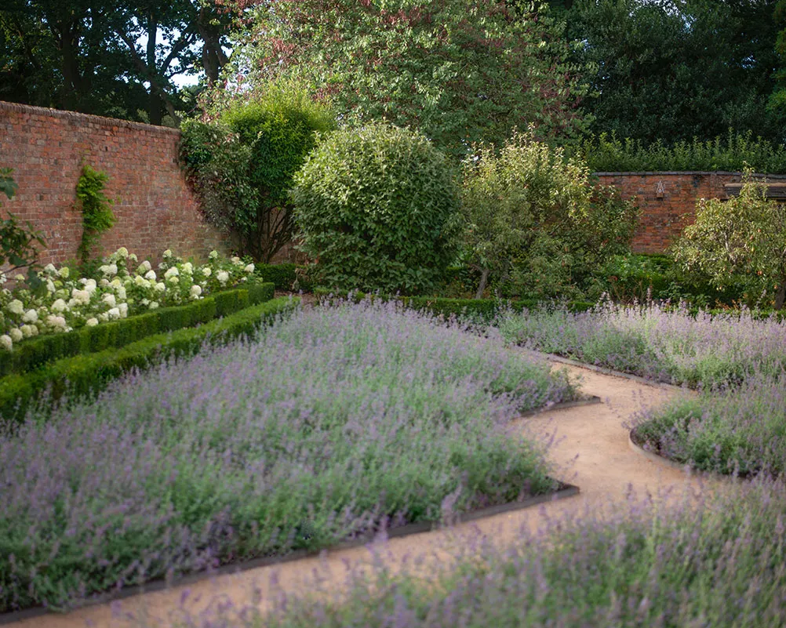
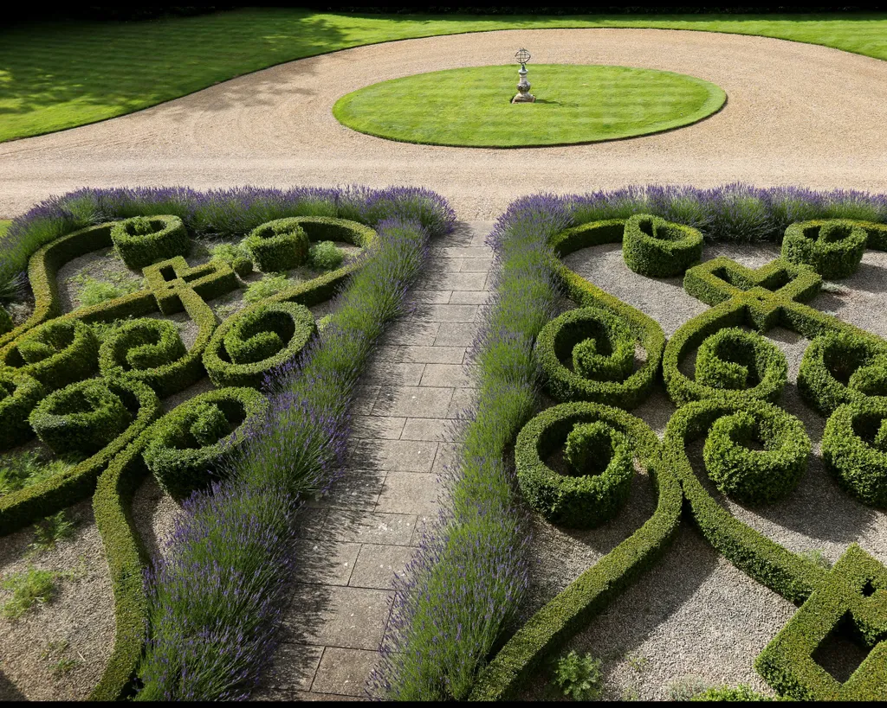

Formal Renaissance Garden Design
Classic formal English design includes neatly trimmed hedges with symmetrical layouts, manicured lawns that surround central points; statues, water features and patios or courtyards. These gardens symbolize timeless beauty that have an emphasis on refinement.

Symmetry
Using the natural landscapes of the property, designing the lines for a symmetric garden will result in a formal essence. Use appropriate scale and proportions, and create a sense of rhythm.
Evergreens
Topiary, shrubs, structural plants and hedges create a strong architecture when neatly arranged, surround the enclosure and are clipped in a classical look.Ilex crenata, Lonicera nitilda, osmanthus and rosemary are excellent choices for evergreens in a formal garden.
Parterre
Parterre Gardens have a distinguishable pattern of flower beds that are symmetric, that range from historic, to modern. It directly translates to “on the ground” although layers are added to create a vertical effect. They have traditional enclosures made out of low evergreen hedges, and are largely inspired by embroidery. These gardens give off a classic contemporary design.
Key element: Repetition
Gardening styles evolved from formal shapes, to informal, abstract and geometric shapes resulting in a classic contemporary Parterre Gardens.
Planting
There are plants that grow for a vast majority of the year that are often found in Parterre Gardens. Heliotropes, pelargoniums, petunias and verbena create colour variety. Summer flowers consist of Alliums, Agapanthus, Lavender, Summer Bulbs, Tulips. Hedge species; Taxus baccata, Osmanthus, Lunicera nitilda, Euonymus japonicus , Carpinus betulus, Prunus lusitanica and Pittosporum tenuifolium are excellent hedges and greenery. Flowers that are suggested; Geraniums alchemillas, crocosmias, hydrangeas, grasses
Contrast
Adding a variety in height to the garden
Long Flowering Blooms
Salvia, Salvia spp.
Blanket FLower, Gallardia spp.
Russian Sage, Salvia yangii
ConeFlower, Echinacea purpurea
Milkweed, Asclepias syriaca
Catmint, Nepeta spp.
Anise Hyssop, Agastache foeniculum
Day Lilly, Hemerocallis spp.
Garden Phlox, Phlox paniculata
Colour Schemes
Finding the right colours to compliment the property, home and view can all be considered when planting flowers. Depending on the timing of each bloom, the garden can be planted according to the blooming season for ongoing seasonal floral expression.
Hard Scaping
Arranging the terraine to suit your gardens dreams is more accessible now, than ever. Creating landscapes to appear like others, adding ponds, hills or other feautures can add character and a story to your property.
Centerpieces
Scultpures, ornaments, marble or fountains are often presented in the central part of a formal garden. This attracts the eye, and gives a sense of signficance as the rest of the garden radiates outward from the central focal point.
Formal Italian
Knot
A Knot Garden dates back to the middle ages, much like a monastic garden it consists of herbs, medicinal plants and is similar in that it is often referred to as “the embroidery of the earth”. Knot gardens are the predecessor of Parterre Gardens.
Symmetrical beds, evergreen hedges neatly clipped in repeating ornamental designs with gravel paths throughout.
These gardens require a high level of maintenance and upkeep.
Key Aspects
Topiary
Classic
Symmetrical